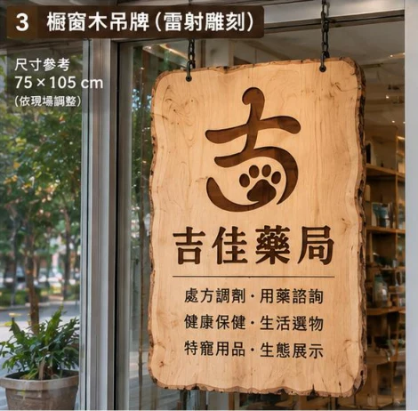

處方箋與慢箋領藥
洽詢處方箋調劑與慢性病連續處方箋領藥。來店前可先電話確認藥品備貨及藥師服務時段。
YOUR NEIGHBORHOOD, WITH A LITTLE WONDER
一樓，安心的日常照護。
二樓，與生命相遇的自然角落。
在吉佳，把健康與好奇心一起放進生活。
01 / COMMUNITY PHARMACY
從每一次領藥，到日常保健的選擇，
讓專業的藥事照護，走進你的生活。
洽詢處方箋調劑與慢性病連續處方箋領藥。來店前可先電話確認藥品備貨及藥師服務時段。
從生活習慣、營養補充需求到現有用藥，和藥師一起了解適合自己的保健選擇。
探索居家量測、日常防護與照護用品，選購前洽詢產品規格、使用方式與供貨情況。
03 / EXPLORE OUR SELECTION
先認識商品類別與服務，再和我們聊聊。
實際品牌、品項與供應情況，歡迎洽詢門市。
顯示全部 6 個項目
維生素、礦物質等營養補充類別，從飲食習慣與個人需求開始了解。
益生菌、魚油等常見保健品類別，認識成分、劑型與日常補充方式。
缸體、溫濕度量測、照明與環境用品，依飼養物種討論配置需求。
出門前，為你的爬蟲與特殊寵物，先安排一份安心的照護計畫。
探索雨林造景與生物標本陳列，為空間加入值得細看的自然細節。
以上為商品類別及服務導覽；圖像為分類示意。保健食品不能取代均衡飲食、藥物或醫療。
04 / MEET OUR LITTLE MANAGER
把日子過得慢一點，把好奇心留多一點。
來吉佳，也別忘了看看店長今天有沒有上班。
05 / COME SAY HELLO
領藥、選物、寄宿或參觀，
歡迎先與我們聯絡，安排這次相遇。
LINE 官方帳號開通後將於此提供連結。

OUR SIGNATURE
以吉字結合貓掌，延伸原木的溫度。
這是吉佳對日常照護與生命之美的想像。